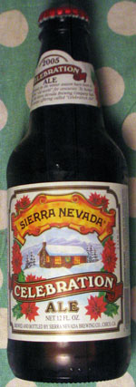

Who exactly is the grinch here?

Though I’m reluctant to enlist in either side of the imaginary War on Christmas, in this case I just can’t resist. The beer bottle pictured here is, well, a travesty.
Certainly I don’t agree with Fox News host Jon Gibson, who asserts in his 256-page book on this gravely important issue that “liberal activists” are plotting to eliminate Christmas. I know people I would call such names and they LOOOOVE Christmas. So much.
Concerning that book, Slate had an article presenting a history of American Christians conspiring to end Christmas in the 17th century. Their efforts were much more direct, including jail time for observation of Christmas. It’s a very funny article and does a lot to defuse the silly idea that liberal-anythings want to eliminate Christmas.
Still, something is going on in Christmasland—this December was different somehow. People were restrained in their Christmas language more than in years past. What the jolly-reindeer’s goin’ on?
Brain-dead marketing.
Corporations are the queens of the multi-whatever, offend no one, do nothing philosophy. They are the ones tripping over themselves to avoid saying “Christmas.”
Just look at this beer! It has poinsettias on it. It’s a Christmas beer. Yet, not only do they avoid using that word anywhere on the label, they avoid even its standard euphemism, “holiday.” Instead of holiness, they evoke Kool and the Gang.
If you’re thinking it’s a New Year’s beer, it’s not. MrLittlePants got it on discount Dec. 27. (No way are we buying fancy beer that ain’t on sale!) And, you know, it has the damn poinsettias on it. It’s supposed to be a Christmas beer, and we didn’t like it too much anyway.
Here’s the marketing department’s attempt at explaining all of this on the bottle’s neck:
Special ales made for the winter season have been a tradition in the “old world” for centuries. To honor this tradition, the Sierra Nevada Brewing Company has made its own unique offering called “Celebration Ale.”
Ahh, “the winter season.” The “old world.” (Even they saw fit to scare-quote that one.) Try saying what you mean, ye people of marketing: In Europe they have Christmas beers, so we thought we would cash in too. Now, where’s my paycheck?
In Europe they also, without controversy, have Christmas tea; I bought some for my parents once. And some crazy cake related to the wise men. Compared to us, these are liberal countries and they are not ashamed of Christmas.
The nutty thing is, you can’t sell a Christmas beer if you shrink from using that very word. It’s hopeless. Your target market is enthusiastic about Christmas. They’re shopping for Christmas, they’re drinking for Christmas, it’s sort of … obvious. Don’t they teach this stuff in business school?
Conservative rabble-rousers, take a hike. If the word Christmas is in trouble, it’s the fault of your retarded golf course buddies. Leave us secular-but-Christmas-loving liberals out of it.
Backtalk
i agree! although i think that has always been “celebration ale” i am a huge fan of “hallmark”-style christmas and i missed out this year… trying to be nice and incorporate the new boy. so happy chrismukkah it was. but we will be having a (belated due to scheduling) “holiday meal” of cornish hens and latkes. next year i am gettin’ a damn tree!
Gosh, I hadn’t even considered that the “Celebration Ale” wasn’t new. (My fact-checker is, er, on holiday.)
Anyway, I think it’s a lame name for however long it’s been around, which, really, can’t have been that long can it? Okadots, are you even old enough to drink? jk.
not to mention it tastes so so horrible.
Add a comment